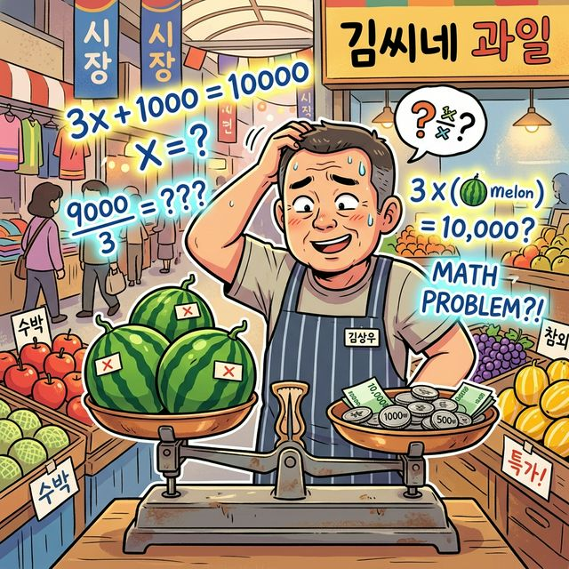
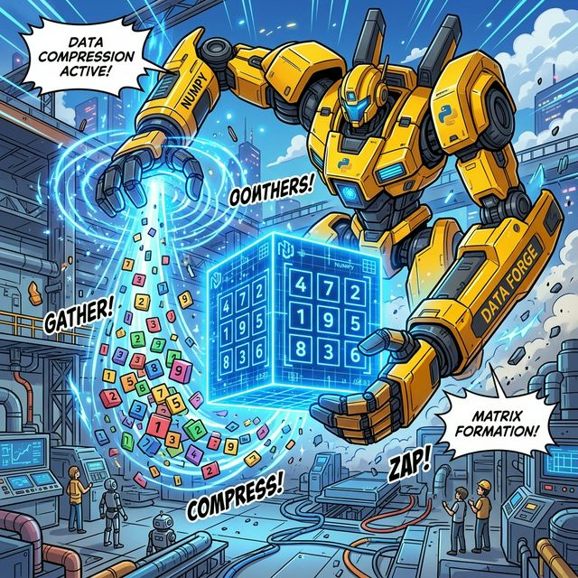

4.2.0 왜 갑자기 행렬인가? (방정식의 한계)
학습목표
본 장에서는 “왜 데이터 과학과 파이썬 코딩을 배우는데 갑자기 수학 시간에 포기했던 ‘행렬’ 그림이 튀어나오는가?”에 대한 근본적인 의문을 해결합니다.
중학교 때 배웠던 1차 방정식과 다항식의 계산에서 출발하여, 변수의 개수가 기하급수적으로 늘어나는 AI 시대에 왜 ‘행렬(Matrix)’이라는 거대한 숫자 아파트가 필연적으로 발명될 수밖에 없었는지 직관적인 비유로 깨우칩니다.
💡 TL;DR (1분 핵심 요약): 행렬의 탄생 배경
- 방정식의 한계 💥: 사과($x$) 한 개의 가격을 구할 땐 방정식 $2x = 1000$으로 충분했지만, 마트의 수십만 개 상품의 변동성을 모두 $x, y, z, a, b…$ 문자로 써 내려가는 건 불가능한 노가다입니다.
- 숫자만 빼내기 (행렬의 탄생) 🏢: 복잡한 식에서 귀찮은 문자 껍데기($x, y$)를 싹 다 벗겨버리고, 오직 알맹이인 ‘계수(숫자)’들만 직사각형 모양의 표(아파트)에 가지런히 입주시켜 통째로 연산하기 시작한 것이 바로 행렬입니다.
- Numpy와 AI 🤖: 이런 행렬 덩어리를 사람 손이 아닌 컴퓨터로, 그것도 수백만 번의 충돌 연산을 0.1초 만에 해치우는 파이썬의 궁극적인 무기가 바로 우리가 배울 Numpy(넘파이)입니다.
1. 수박 장수와 1차 방정식의 추억
우리가 중학교 시절 처음 만난 대수학, 즉 방정식(Equation)은 정말 위대했습니다.
손가락을 꼽아가며 찍어서 맞히던 시절을 끝내고, 모르는 값을 미지의 문자 $x$ 로 둔 다음 양팔 저울의 균형을 맞추듯 해답을 끄집어내는 매직이었죠.

시장의 수박 장수가 양팔 저울에 수박과 숫자를 올리며 머리를 긁적이고, 허공에는 수학 방정식이 떠다니는 모습
- “수박 3통이랑 천 원짜리 파 1단을 샀더니 만 원이 나왔네? 수박 한 통($x$)은 얼마지?”
- $3x + 1000 = 10000$
- 답: $x = 3000$
이처럼 내가 알아내야 할 미지수가 한 개($x$)이거나 두 개($x, y$)일 때, 인류는 종이와 펜만으로 충분히 세상을 예측할 수 있었습니다. (연립방정식)
2. 변수 폭발: AI 시대의 절망적인 노가다
하지만 세상이 복잡해졌습니다.
예측의 대상
여러분이 단순한 과일 장수가 아니라, 쿠팡이나 아마존의 “전국 물류 데이터 센터장”이라고 상상해 보세요.
거대한 물류 센터에서 수많은 미지수 $x_1, x_2, \dots$ 들이 토네이도처럼 몰아치자 센터장이 머리를 쥐어뜯으며 절망하는 장면
내일 당장 서울 시내 1,000만 명의 고객이 어떤 물건을 살지 예측하려면, 고려해야 할 변수(미지수)가 몇 개쯤 될까요?
- $x_1$: 고객의 나이
- $x_2$: 어제 검색한 단어
- $x_3$: 오늘 비가 올 확률
- …
- $x_{50000}$: 방금 본 유튜브 썸네일 색상
거대한 방정식
이 5만 개의 변수가 서로 얽히고설켜 수백만 개의 연립방정식을 만들어냅니다.
이걸 옛날 방식으로 종이에 쓴다면 아래와 같은 끔찍한 모습이 될 것입니다.
\(3.2x_1 + 0.5x_2 - 1.2x_3 \, ... \, + 4.1x_{50000} = 99.2\) \(-1.1x_1 + 2.7x_2 + 0.0x_3 \, ... \, - 0.2x_{50000} = 12.5\) \(... \text{(이런 줄이 100만 줄 있음)} ...\)
이걸 사람이 풀기는커녕, 식을 받아 적다가 수명이 다 끝날 지경입니다.
행렬의 필요성
우리는 깨달았습니다.
“아… 매번 $x_1, x_2, x_3$ 같은 문자(껍데기)를 일일이 적어주는 건 우주급 낭비구나!”
3. 껍데기를 벗겨라! 숫자 아파트의 건설 (행렬의 탄생)
수학자들은 꾀를 냈습니다.
규칙의 발견
식을 여러 개 적다 보니, 어차피 변수들의 순서($x_1, x_2, x_3…$)는 항상 똑같은 줄에 있다는 걸 발견한 거죠.
“그럼 귀찮게 맨날 $x, y, z$ 쓰지 말고, 껍데기는 과감하게 벗겨 쓰레기통에 버려버리자! 대신 그 앞에 붙어있는 핵심 알맹이, 즉 숫자(계수)들만 네모난 괄호
[ ]방 안에 예쁘게 줄 세워서 입주시키자!”
방정식에서 행렬의 발견
복잡한 방정식에서 숫자만 쏙~ 빼서 아파트에 층층이 정렬한 결과물! 이것이 바로 행렬(Matrix)의 위대한 탄생입니다.
수만 개의 $x, y, z$ 문자들이 둥둥 떠다니는 복잡한 수식의 바다. 한 수학자(또는 로봇)가 거대한 자석을 들고 그 수식들 위를 지나가자, 거추장스러운 영어 알파벳들은 후드득 떨어져 버리고 오직 엑기스인 ‘숫자’들만 빨려 올라와 네모난 아파트 창문(표) 칸칸마다 자기 자리를 찾아 쏙쏙 박히는 모습입니다.
방정식이란 텍스트의 숲에서 벗어나, 데이터를 엑셀 표와 같은 2차원 그리드(Grid)에 가둬놓는 순간, 인류는 드디어 ‘숫자 덩어리 전체’를 한 번에 더하고 곱하는 초대량 폭격 스킬을 얻게 되었습니다.
4. 인수분해와 텐서, 그리고 Numpy
중학교 때 배운 ‘인수분해’를 기억하시나요?
복잡하게 흩어진 식 $x^2 + 5x + 6$ 을 깔끔하게 조립식 부품 $(x+2)(x+3)$ 으로 묶어내어 복잡성을 낮추는 기술이었습니다.
이 행렬(Matrix) 역시 딥러닝과 코딩의 세계에서는 수만 개의 흩어진 데이터를 하나의 $M$ 이라는 거대한 블록 장난감으로 묶어버리는 궁극의 인수분해 장치입니다.

파이썬 Numpy 로봇이 흩어진 숫자 데이터 블록들을 강력한 에너지로 끌어모아 하나의 거대하고 빛나는 텐서(행렬) 메가 블록으로 압축 조립하는 역동적인 모습
행렬 계산을 위한 넘파이
그리고 파이썬 세계에서는 이 거대한 아파트(다차원 배열, Tensor)를 짓고, 허물고, 서로 부딪혀 곱연산을 시키는 중장비 크레인이 바로 Numpy (넘파이) 패키지입니다.
자, 이제 귀찮은 방정식 문자는 버려두고, 오직 숫자들의 격자무늬 체스판, 행렬 세계의 문을 본격적으로 열어보겠습니다.